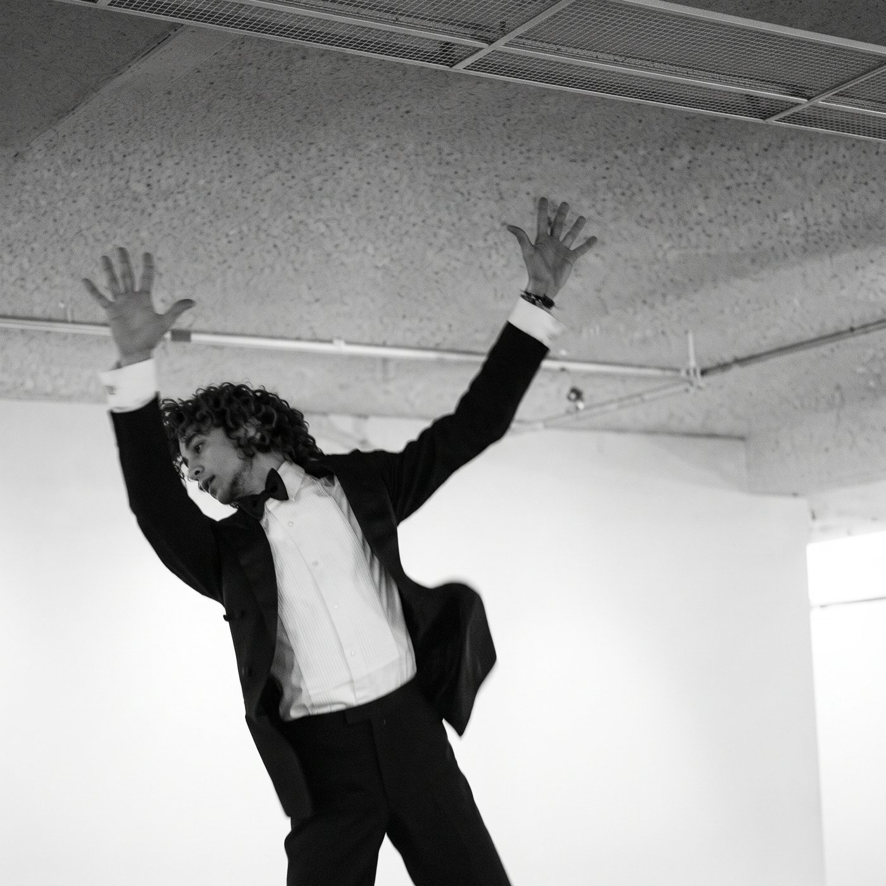
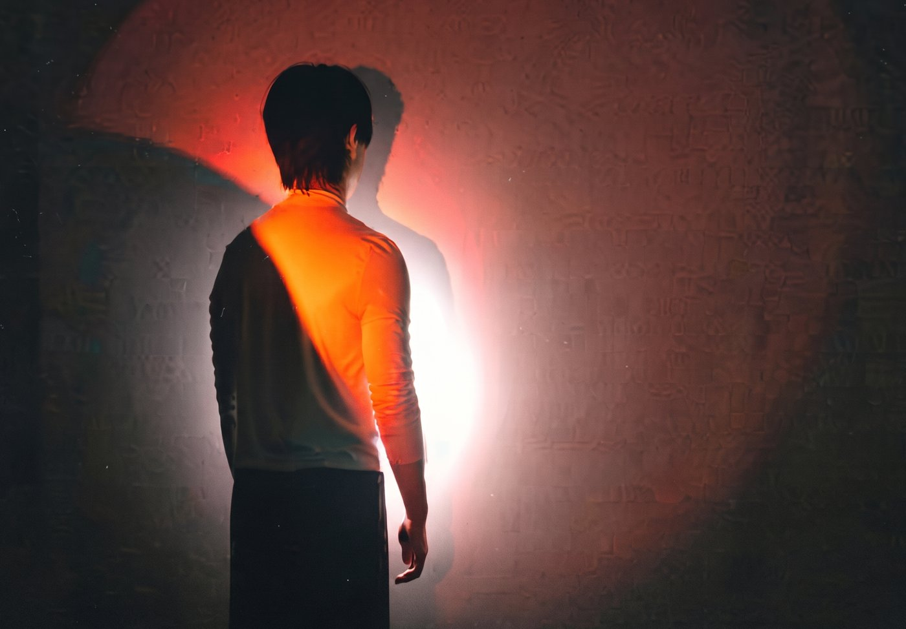
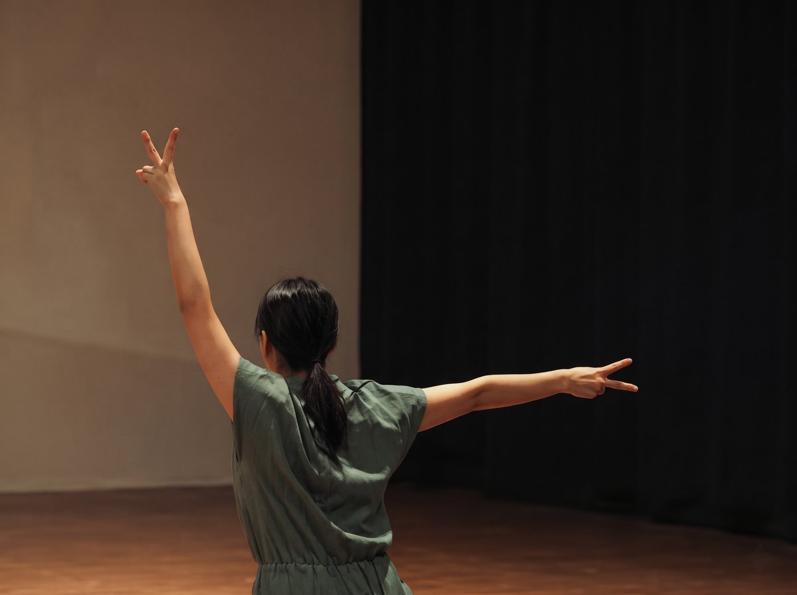
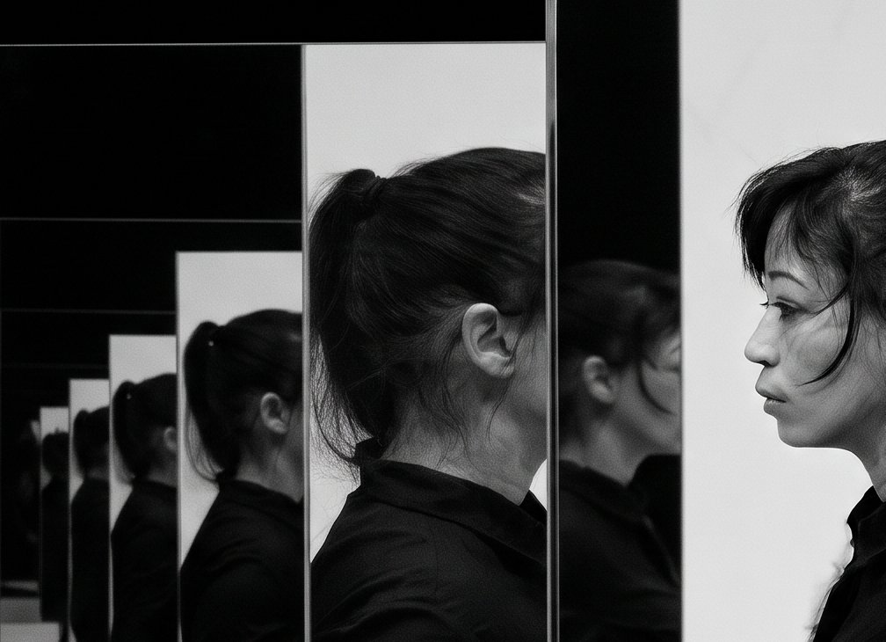
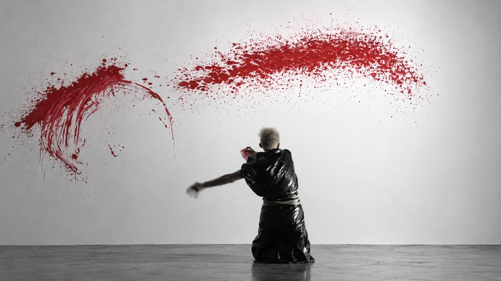
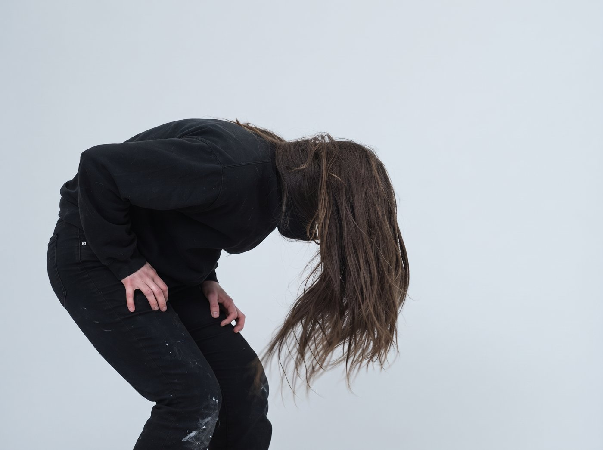
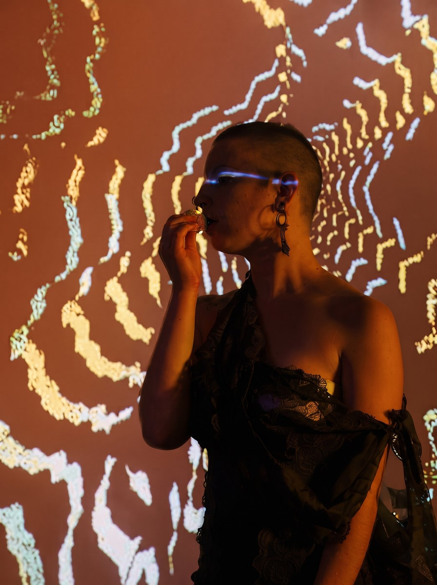
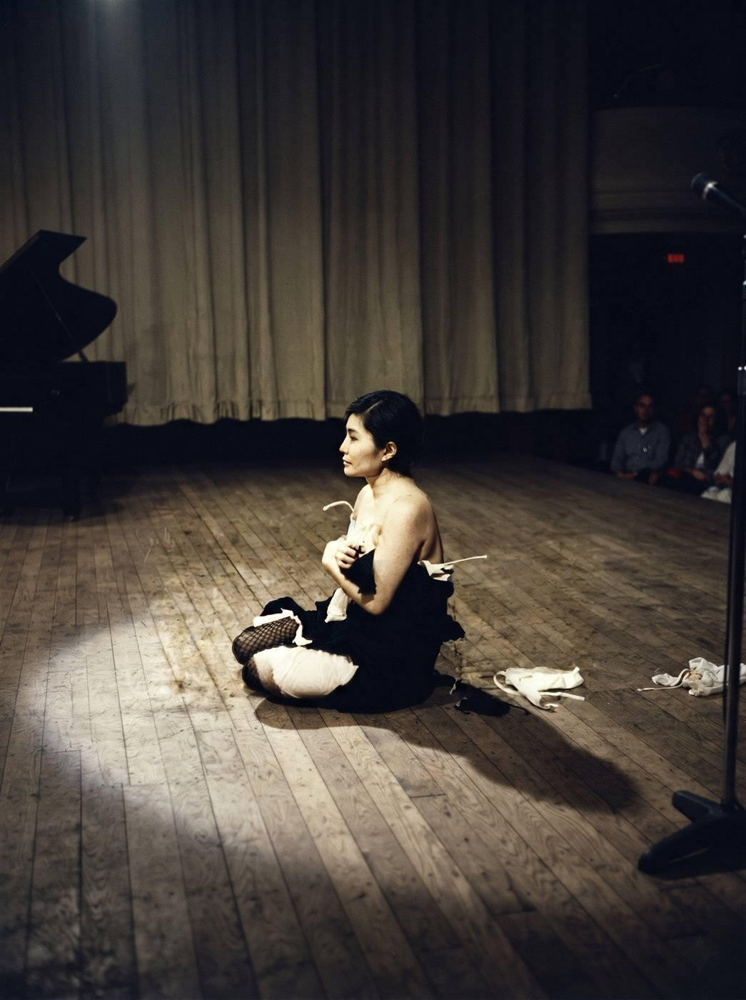

Performance는 퍼포먼스, 무용, 연극적 행위처럼 몸과 행위가 중심이 되는 작품과 그 기록입니다.

A4광장안동권, 이연주, 정유라

중력 없는 인사박성훈
군무, 흐릿한 합의김지훈

등으로 보는 빛이수진

올려다보는 자들의 시간최지은

거리 재기 연습정다은

Profiles in QueueLéa Moreau

착용된 풍경한승우

맨발의 리허설오세진

겨눔의 안무윤재혁

붉은 획의 무게서은비
얇은 경계에서장혜원

벗을 수 없는 행진문태준

낙하 직전의 자세강민정

Skin as SignalKai Nakamura

관객이 떠난 무대송유진